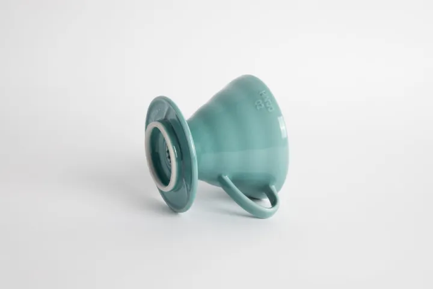

把制造地、材质和工艺摊开来看。留下一份有依据的商品档案。

从一件物品，认识一种品质。
换个关键词或筛选条件，继续翻一翻。
先确认它是什么、在哪里制造，再记录它为何值得被研究。
记录具体型号的制造说明。不同系列、版本和批次分别核验。
材质、工艺、独立测试和长期表现分别记录，厂商描述不当作实测结果。
优先非中国制造。中国制造仅在同类品质冠绝、证据充分时破例。
这是商品资料库。页面不销售商品，不提供购买渠道或外部购买跳转。
优先收录有具体制造依据的非中国制造商品。品牌总部所在地不等于制造地；品牌整体说明只标注为品牌级依据，不能替代型号及批次核验。
品质结论需要可复核的材质与工艺资料、独立测试及长期使用证据。中国制造商品只有在同类品质冠绝且依据充分时才可破例，必须记录同类对照和审核说明。
“资料建档”表示已有初步资料，不表示完成独立质量核验。“品质审定”需要完整证据与人工审核。首批档案均处于资料建档阶段。
每份档案记录核验日期、证据范围与资料缺口。制造地变化或证据失效时重新审查。